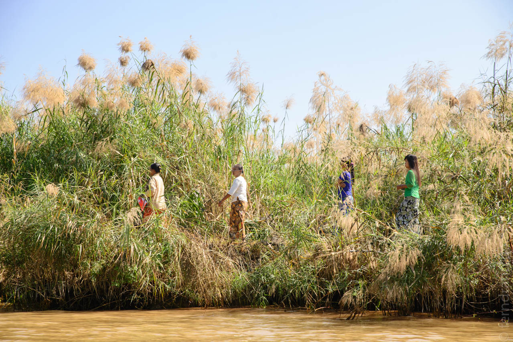
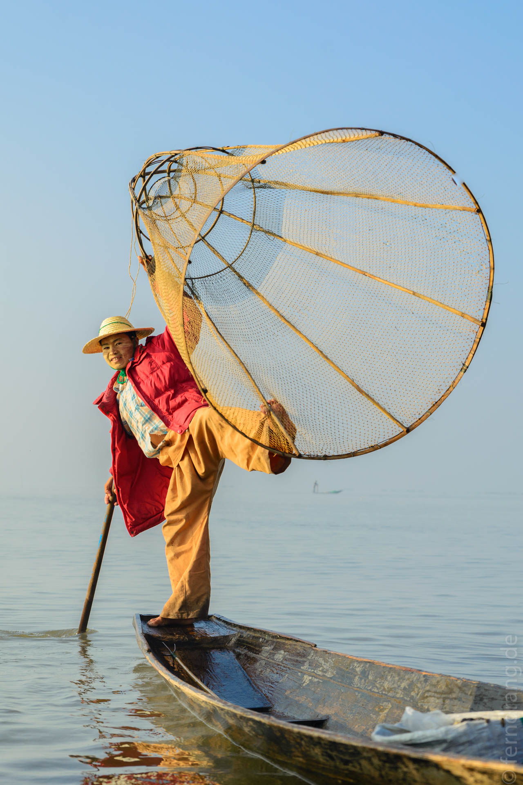
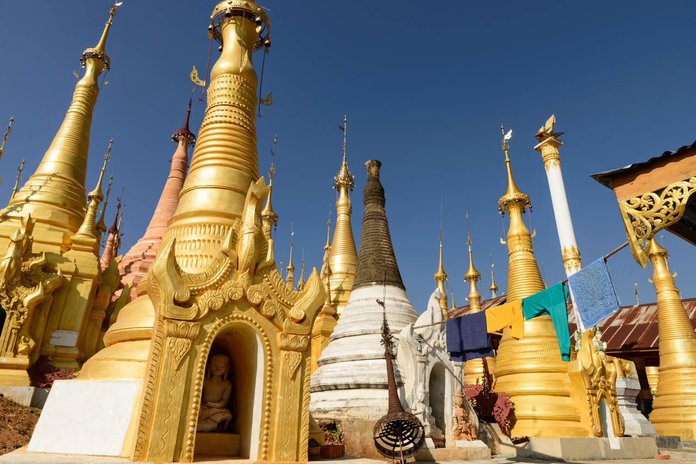
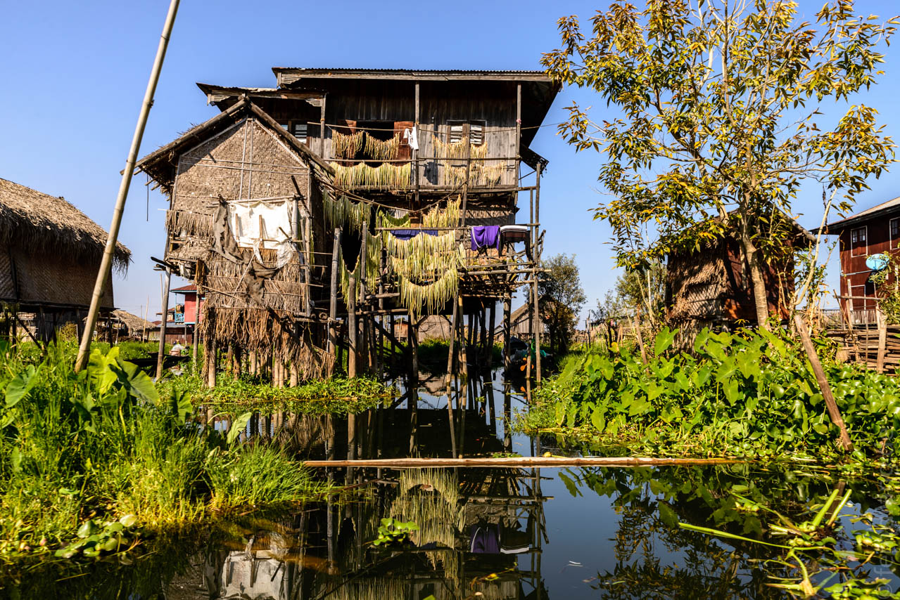
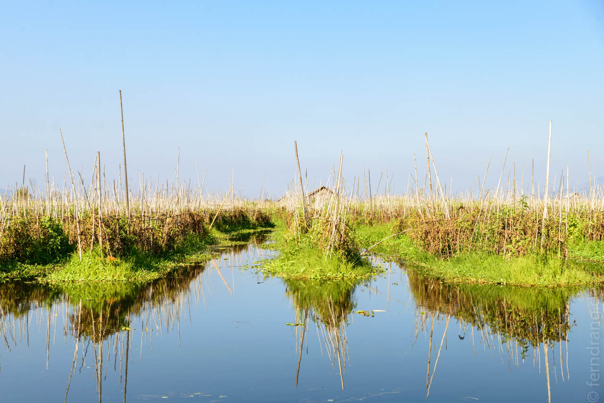
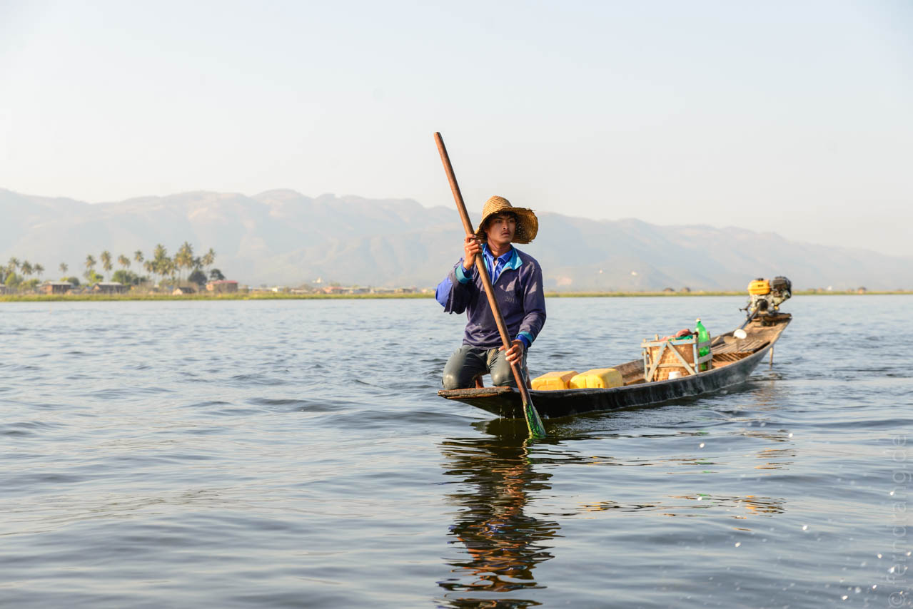

Die nächste große Touristenattraktion in Myanmar ist der Inle See. Da er nicht gleich um die Ecke liegt und man hier dreistellige Entfernungen am ehesten in Tagen misst, haben wir uns einen Flug besorgt. Entgegen der Angaben auf unserem Ticket sind wir nicht mit Myanmar Airways sondern mit Myanma Airways geflogen. Letztere gilt als so unzuverlässig, dass das Auswärtige Amt davor warnt. Tja. Immerhin standen unsere Namen auf der handgeschriebenen Passagierliste – und heil angekommen sind wir auch.
Unser Guesthouse Princess Garden hat uns abgeholt und nach Nyaung-Shwee gebracht. Der Ort ist klein, aber durchaus lebendig. Als Hauptzugang zum See gibt es eine gute Auswahl an Restaurants und Unterkünften. Unsere ist am Ortsausgang gelegen und besteht aus gepflegten Bungalows. Die Familie ist sehr nett und hilfsbereit.
Wir haben uns gleich wieder Fahrräder geliehen, um die Umgebung zu erkunden. Der See ist ohne Boot kaum zugänglich, weil das Ufer von einem breiten Sumpfstreifen und Zuckerrohrfeldern umgeben ist. Der Ort selbst hat einen schönen Markt, wo man allerlei Snacks, Lebensmittel und nützliche Dinge wie Fleecepullover (für 5$!) kaufen kann – denn hier wird es mit Einbruch der Dunkelheit empfindlich kalt. In nördlicher Richtung liegt ein altes Kloster aus Teakholz, das auf Stelzen gebaut ist und von innen wie ein tibetisches Schiff wirkt (falls es so etwas je gegeben hat). Fährt man östlich an den See, kommt man erst an einer Menge Zuckerrohr vorbei, das den See wie Schilf abschirmt und hübsch blüht. Zu unserer Überraschung lag ein Weingut an der Straße. Von einer schönen Terrasse aus hat man einen malerischen Blick über die Weinberge und die Anfänge des Sees. Der Wein ist auch recht passabel und sorgt für europäische Stimmung. Beim schicken Thai-Restaurant um die Ecke haben wir frierend unser Weihnachts-Curry eingenommen.
Den nächsten Tag haben wir ganz auf dem See verbracht. In der Frühe ist es eiskalt. Nebel und Fahrtwind tun ein übriges, so dass wir unsere gesamte Garderobe auf einmal getragen haben. Der Kanal, der Nyaung-Shwee mit dem See verbindet ist rappelvoll mit langen, schmalen Holzbooten, die Fracht, dutzende Einheimische oder eine Handvoll Touristen geladen haben. Die Boote haben große, blanke Zweitakter an Bord montiert, die einen ohrenbetäubenden Lärm machen. Ohrstöpsel wären hilfreich gewesen.
Der Inle-See ist berühmt für seine Fischer, die durch ihre eigenwillige Rudertechnik auffallen. Sie balancieren auf einem Bein auf dem Ende ihres Einbaums und Wickeln das zweite ums Paddel, mit dem sie in artistischen Bewegungen rudern und lenken. Wie ausgerechnet ein Volk, das Röcke trägt, auf so etwas kommt? Die meisten Fischer stürzen sich auf die Touristenboote, um gegen Trinkgeld ihre kleine Show darzubieten.
Am Rand des Sees sind ausgewachsene Dörfer auf Stelzen entstanden, die nur per Boot zu erreichen sind. Hier geht es mit dem Einbaum zur Pagode oder zur Teestube. Durch lange, von Wasserhyazinthen zugewachsenen Kanäle führt der Weg nach Intein. Der Ort ist wieder auf festem Boden erbaut und berühmt für seinen bunten Markt, wo Frauen aus dem Umland in bunten Trachten ihre Waren verkaufen, und seine schönen Stupas. Letztere sind älter und schöner verziert als alle, die wir bisher gesehen haben. Einige sind halb verfallen und bewachsen, was dem Ort einen morbiden Charme verleiht.
Wieder auf dem See sind wir in eine Menge Betriebe geschleppt worden: Zur Lotus-Weberei, zum Goldschmied, zum Schmied. Das war weniger uninteressant als erwartet. Der Abstecher durch eines der Floating Villages mit den berühmten Floating Gardens hat sich aber sehr gelohnt. Die Wasserhyazinthen bilden eine ziemlich fruchtbare, schwimmende Erdschicht an ihren Wurzeln. Darauf gedeiht offenbar alles mögliche. Was wir uns wie schwimmende Schrebergärten vorgestellt hatten, entpuppte sich als ausgewachsene Landwirtschaft: Die langen Stöcke, an denen die Beete fixiert werden, reichen Kilometer weit in den See.
 
Für den Sonnenuntergang auf dem See waren wir etwas früh dran, so dass wir uns zum Dösen an einer Hyazintheninsel festgemacht haben. Der Bootsjunge wurde von der gemütlichen Stimmung leider so zutraulich, dass er mit Kopfhörern im Ohr grausig stimmbrüchig seine Lieblingslieder mitgesungen hat.
Nach so viel Wind, Lärm und Kälte haben wir uns einen Tag faulenzen gegönnt. Am Nachmittag haben wir uns mit einem Einbaum durch die Kanäle bei Nyaung-Shwee schippern lassen. Das war sehr viel beschaulicher als die motorisierte Variante. Die Häuser an den Kanälen sind aber oft nur sehr dürftig gebaut und haben keinerlei Annehmlichkeiten. Die Menschen waschen sich und ihre Kleidung an den kleinen Stegen. Vermutlich ist das nicht das einzige, was so erledigt wird. Der Floating Garbage nagt ebenfalls am Idyll.